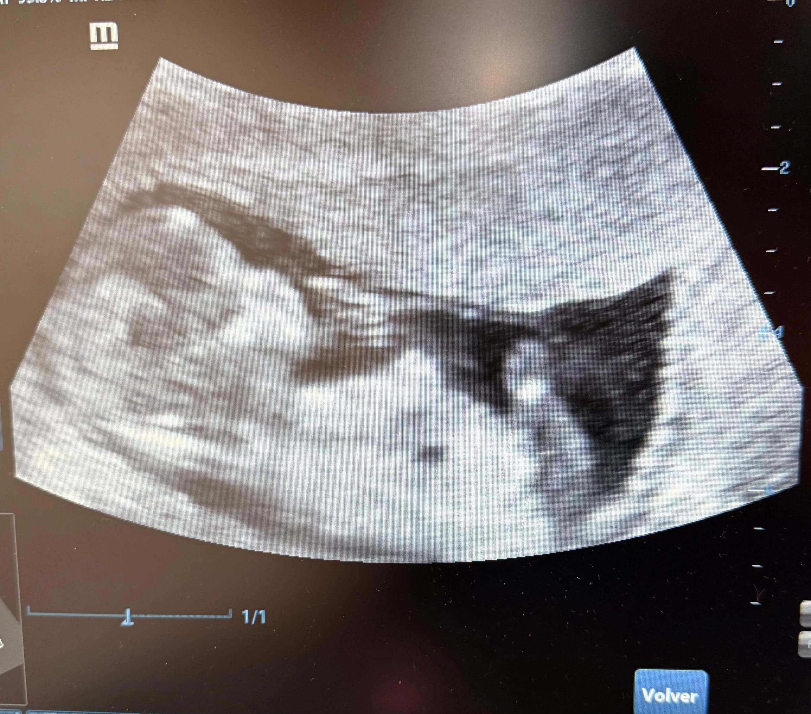
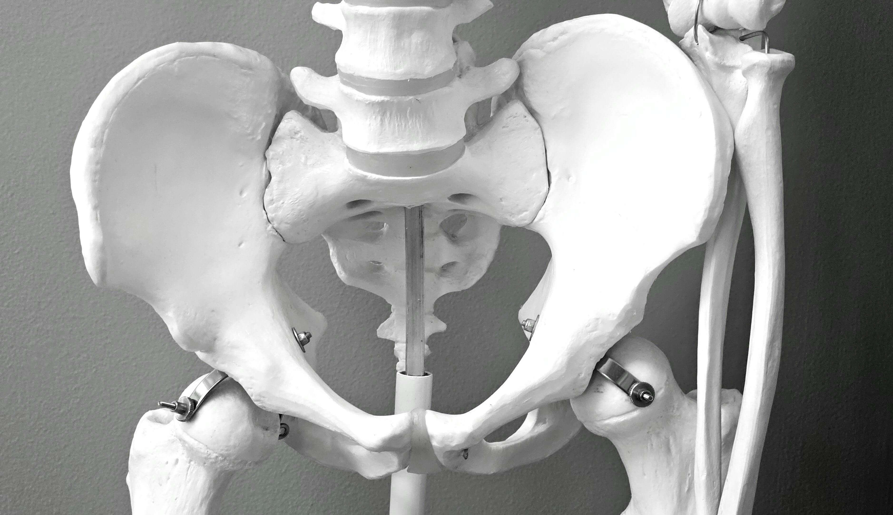
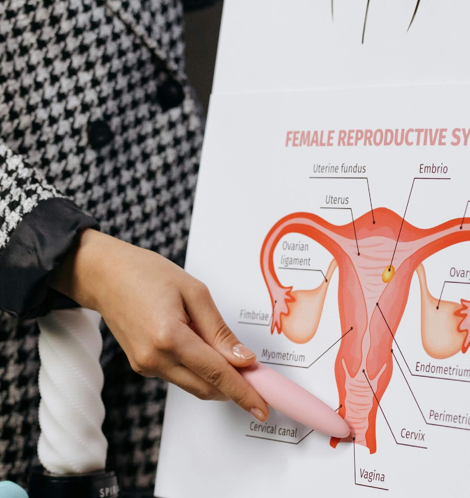

Ginecología y Obstetricia
Dra. Victoria Prada | Especialista en Piso Pélvico y Ginecología Estética
Dra. Victoria Prada | Especialista en Piso Pélvico y Ginecología Estética
Integral, preventiva y de seguimiento
Acompañamiento en tu embarazo

Ginecológicas y obstétricas
Asesoría en métodos anticonceptivos

Especialista en incontinencia y prolapsos

Procedimientos íntimos especializados
Dra. Verónica Bond
Colon, recto y anoDra. Jhorbelys Dugarte
Fertilidad | Piso PélvicoDra. Beatriz Quijada
Embarazo de alto riesgoDr. Héctor Adrián
Eco 5D | Diagnóstico tempranoDra. Yusbelis Morillo
Piso PélvicoProcedimientos no invasivos con resultados excepcionales

Rejuvenecimiento íntimo, cicatrices y lesiones de la piel con alta precisión.

Fortalece el piso pélvico y activa los músculos con campo electromagnético de alta intensidad.

Tecnología de ultrasonido focalizado de alta intensidad para tratamientos no invasivos.

Especialista en Piso Pélvico y Ginecología Estética
Médico especialista en ginecología y obstetricia, con amplia experiencia en el área. Su enfoque combina la más avanzada tecnología médica con un trato cálido y personalizado, brindando atención integral a cada paciente.
"Excelente atención, la Dra. Victoria me ayudó con mi problema de piso pélvico."
"El control prenatal fue una experiencia maravillosa. Muy cálidas."
"Me sentí en confianza desde la primera consulta. Horarios flexibles."
Consultorio 512 | Anexo Centro Clínico Profesional Caracas
San Bernardino, Caracas
Piso 5 del Anexo | Consultorio 512
📞 Teléfono fijo: (0212) 577-5970
📲 WhatsApp: +58 412 1827436
⏰ Horarios: Lunes, Miércoles y Viernes 9am a 5pm | Sábados 9am a 12pm
📌 Tips adicionales:
✨ Primera vez con nosotros? Llega 10 minutos antes para registrar tus datos.